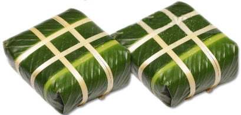

There are numerous happy events in my life that I can recall and among them, I would like to talk about the time when my family gathered to make the Chung cake for the Tet holiday.\n\nThe Lunar New Year, or Tet, is a very special traditional holiday in my country. It was probably my most favorite holiday when I was a small girl as my family had a lot of activities to celebrate this occasion. Among them, making the Chung cake made me excited the most. The Chung cake is made of glutinous rice, green beans and fat pork, wrapped in banana leaves in the shape of a square. I often played with my older brother when my parents prepared the ingredients for the cake. And then, my father lit a small fire to boil the cake overnight.\n\nIt was perhaps the only time of the year when I was allowed to stay up late. While my family was sitting around the warm fire, my grandmother would tell the old legendary story about the Chung cake to commemorate the filial affection of Lang Lieu prince to his father and remind us of the long lasting Vietnamese tradition.\n\nIn recent years, my family has not had enough time for making the Chung cake on our own. However, to me, a ready made Chung cake that we buy from a local market cant bring the special feeling and replace the taste of a Chung cake from my childhood. I hope that my family can continue our tradition in the coming years.\n \n\n\n"